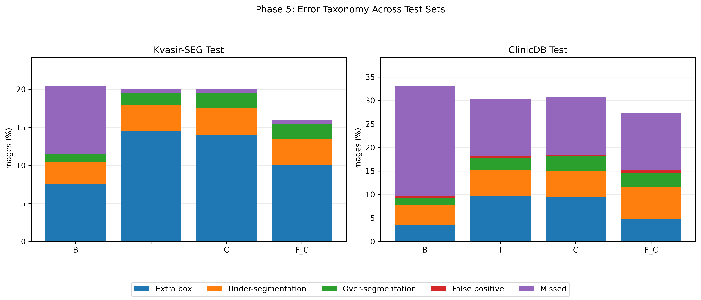
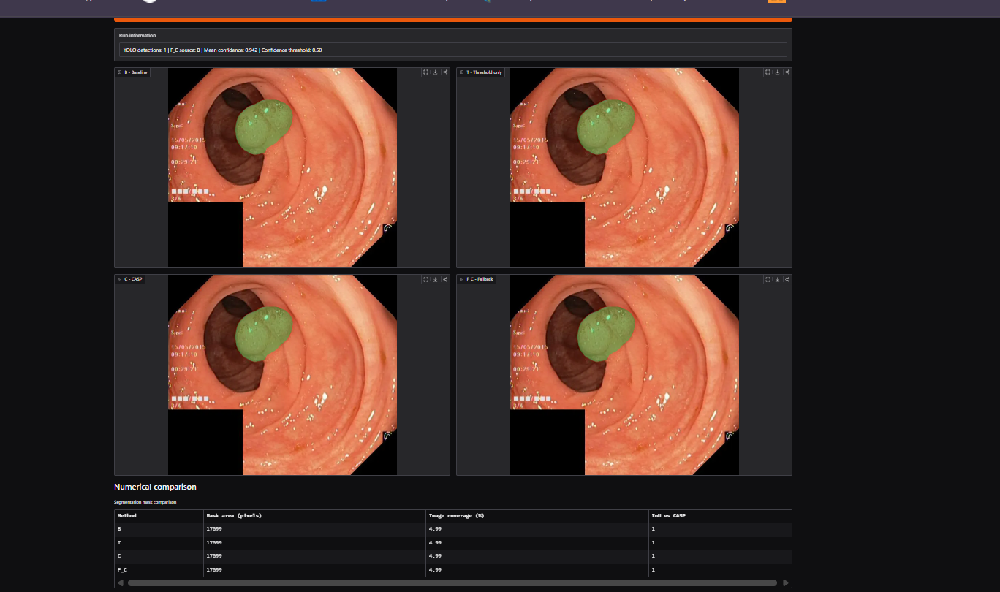
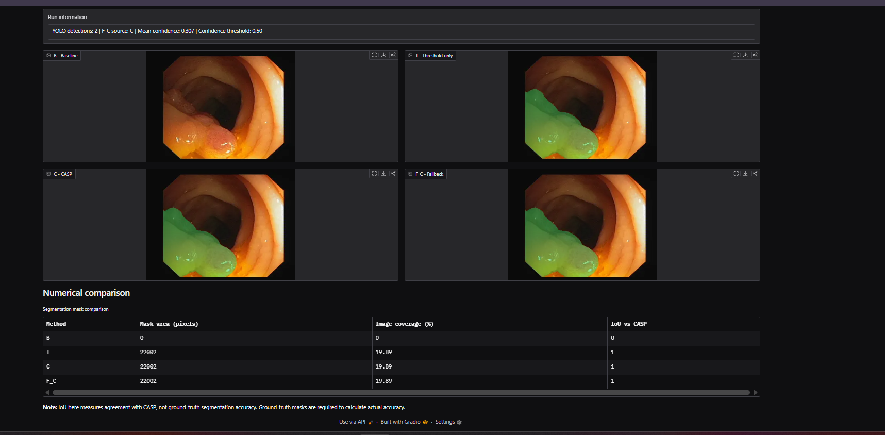

| Group | F26-13 |
| Track | A (Research & Development) |
| Instructor | Dr. Hajra Waheed |
| Date | 18 November 2026 |
| Name | Roll number |
|---|---|
| Kashish Fatima (lead) | 24L-2605 |
| Khushbakht Sohail | 24L-2604 |
| Zahra Saeed | 24L-2512 |
F26-13.ipynb (rebuilds every table and figure from Phase 3 logs, CPU only, ~1 min)Summary. Phases 3–4 showed that our method CASP v1 (C) beats the YOLO → SAM 2 baseline (B) [1]–[3] on Kvasir-SEG [4], on CVC-ClinicDB [5] (another hospital) and on nine image corruptions, but that the whole gain comes from its confidence gate: lowering the threshold alone (T) does as well, and SAM 2's score never rejected a box. Phase 5 investigates why, using saved Phase 3 logs (1,175 candidate boxes with their YOLO confidence and SAM 2 score, ground-truth boxes from the oracle run O) and a second detector trained with seed 43; no Phase 3 number changed. We (i) decompose the remaining error, (ii) test which signals distinguish real polyp boxes from false ones, (iii) explain the results theoretically, (iv) test a pre-fixed fallback rule F (DL-44), and (v) replicate the key findings with a second detector. Code: src/eval/filter_analysis.py, src/eval/seed_compare.py; tables: docs/tables/phase5/; decisions DL-44, DL-45 and DL-47.
We evaluate baseline (B), threshold-only (T), CASP v1 (C), oracle bound (O), and fallback rules (F_T, F_C) on Kvasir-SEG test (200 frames) and CVC-ClinicDB (612 frames). Images with no mask score 0 in Dice/IoU; CIs are 95% bootstrap (1,000 resamples, DL-32).
| Dataset | Run | Dice [95% CI] | IoU | Pixel Prec. | Pixel Rec. | Missed | Box Prec. / Rec. / F1 |
|---|---|---|---|---|---|---|---|
| Kvasir-SEG (200) | B | 0.831 [0.792, 0.871] | 0.780 | 0.873 | 0.810 | 18 | 0.877 / 0.865 / 0.871 |
| T | 0.893 [0.871, 0.913] | 0.832 | 0.929 | 0.890 | 1 | 0.807 / 0.947 / 0.871 | |
| C | 0.891 [0.868, 0.912] | 0.831 | 0.926 | 0.892 | 1 | 0.802 / 0.942 / 0.867 | |
| O | 0.952 [0.943, 0.958] | 0.912 | 0.979 | 0.931 | 0 | 1.000 / 1.000 / 1.000 | |
| F_T | 0.895 [0.872, 0.915] | 0.834 | 0.936 | 0.886 | 1 | 0.852 / 0.942 / 0.894 | |
| F_C | 0.893 [0.870, 0.914] | 0.833 | 0.933 | 0.888 | 1 | 0.847 / 0.937 / 0.890 | |
| ClinicDB (612) | B | 0.677 [0.648, 0.710] | 0.628 | 0.712 | 0.671 | 144 | 0.890 / 0.686 / 0.774 |
| T | 0.760 [0.736, 0.785] | 0.698 | 0.800 | 0.764 | 75 | 0.820 / 0.780 / 0.799 | |
| C | 0.757 [0.734, 0.783] | 0.695 | 0.795 | 0.765 | 75 | 0.815 / 0.776 / 0.795 | |
| O | 0.945 [0.942, 0.948] | 0.899 | 0.966 | 0.928 | 0 | 1.000 / 1.000 / 1.000 | |
| F_T | 0.756 [0.731, 0.782] | 0.695 | 0.805 | 0.753 | 75 | 0.859 / 0.763 / 0.808 | |
| F_C | 0.756 [0.731, 0.782] | 0.695 | 0.802 | 0.754 | 75 | 0.857 / 0.762 / 0.807 |
Table 1.1. Clean test set performance. Missed images have no prediction above threshold (Dice = 0).
Lowering the threshold to 0.25 (T) yields +0.062 Dice on Kvasir-SEG and +0.082 on ClinicDB, cutting missed images from 18 to 1 and 144 to 75. CASP v1 (C) matches T within CI bounds (0.891 vs 0.893; 0.757 vs 0.760), proving candidate prompt refinement alone adds no recall or Dice over thresholding. Fallback rules (F_T, F_C) match T and C in Dice while significantly raising box precision (0.807 → 0.852 on Kvasir; 0.820 → 0.859 on ClinicDB) and boosting box F1.
| Dataset | Comparison | Dice Difference [95% CI] | IoU Difference [95% CI] | Win / Loss / Tie |
|---|---|---|---|---|
| Kvasir-SEG | F_T − B | +0.064 [+0.035, +0.093] | +0.055 [+0.030, +0.081] | 17 / 0 / 183 |
| F_T − T | +0.002 [−0.003, +0.006] | +0.002 [−0.004, +0.010] | 4 / 5 / 191 | |
| F_C − B | +0.062 [+0.035, +0.091] | +0.053 [+0.028, +0.080] | 17 / 0 / 183 | |
| F_C − C | +0.001 [−0.003, +0.007] | +0.002 [−0.005, +0.011] | 8 / 10 / 182 | |
| CVC-ClinicDB | F_T − B | +0.079 [+0.060, +0.098] | +0.067 [+0.051, +0.085] | 67 / 0 / 545 |
| F_T − T | −0.003 [−0.010, +0.002] | −0.003 [−0.010, +0.004] | 10 / 26 / 576 | |
| F_C − B | +0.078 [+0.060, +0.097] | +0.067 [+0.051, +0.084] | 67 / 0 / 545 | |
| F_C − C | −0.002 [−0.008, +0.004] | −0.001 [−0.007, +0.006] | 28 / 33 / 551 |
Table 1.2. Paired per-image comparisons (2,000 paired bootstrap resamples, seed 42, DL-32).
Paired differences confirm F preserves the full recall advantage of lower thresholds ($F_C − B > 0$ with CIs excluding zero), while differences with T and C remain bounded within $\pm 0.004$ Dice. Fallback achieves this by suppressing false boxes: in 182/200 Kvasir and 468/612 ClinicDB frames, a confident detection ($\ge 0.5$) is already present, so F safely outputs baseline boxes.
| Corruption | Sev. | B Dice | C Dice | F_C Dice | F_C − B [95% CI] | F_C − C [95% CI] |
|---|---|---|---|---|---|---|
| Gaussian Blur | 1 | 0.842 | 0.870 | 0.878 | +0.036 [+0.015, +0.060] | +0.008 [+0.001, +0.018] |
| 2 | 0.811 | 0.846 | 0.855 | +0.044 [+0.021, +0.071] | +0.009 [+0.002, +0.016] | |
| 3 | 0.724 | 0.806 | 0.808 | +0.084 [+0.051, +0.121] | +0.002 [−0.011, +0.014] | |
| Brightness / Contrast | 1 | 0.837 | 0.883 | 0.891 | +0.053 [+0.026, +0.083] | +0.007 [−0.004, +0.021] |
| 2 | 0.834 | 0.885 | 0.889 | +0.055 [+0.027, +0.087] | +0.005 [−0.008, +0.019] | |
| 3 | 0.799 | 0.838 | 0.842 | +0.044 [+0.022, +0.070] | +0.004 [−0.007, +0.017] | |
| Gaussian Noise | 1 | 0.800 | 0.875 | 0.868 | +0.067 [+0.039, +0.099] | −0.007 [−0.021, +0.004] |
| 2 | 0.687 | 0.761 | 0.741 | +0.054 [+0.029, +0.084] | −0.019 [−0.036, −0.003] | |
| 3 | 0.016 | 0.035 | 0.035 | +0.019 [+0.005, +0.039] | +0.000 [+0.000, +0.000] |
Table 1.3. Performance across nine image corruption settings on Kvasir-SEG test set.
Under blur and illumination shifts, F_C consistently outperforms B (gains up to +0.084 Dice) and slightly exceeds C by discarding spurious false boxes. Under Gaussian noise, F_C maintains gains over B at severities 1 and 2, but loses slightly to C at severity 2 (−0.019 Dice) because severe noise degrades confident boxes, causing F_C to occasionally discard the true polyp. At severity 3, feature extraction collapses entirely ($\ge 192$ misses).
Because an image without a predicted mask scores zero Dice, mean Dice factors exactly into: Mean Dice = P(image gets a mask) × E[Dice | mask]. This isolates detector recall failures from boundary segmentation quality.
| Dataset | Run | P(mask) | E[Dice|mask] | Mean |
|---|---|---|---|---|
| Kvasir | B | 0.910 | 0.913 | 0.831 |
| T | 0.995 | 0.898 | 0.893 | |
| C | 0.995 | 0.896 | 0.891 | |
| O | 1.000 | 0.952 | 0.952 | |
| ClinicDB | B | 0.765 | 0.886 | 0.677 |
| T | 0.877 | 0.866 | 0.760 | |
| C | 0.877 | 0.863 | 0.757 | |
| O | 1.000 | 0.945 | 0.945 |
| Dataset | Oracle − T | Due to misses | Due to box qual. |
|---|---|---|---|
| Kvasir-SEG | 0.059 | 0.005 | 0.054 |
| ClinicDB | 0.186 | 0.116 | 0.070 |
Table 2.1 & 2.2. Factorisation of mean Dice and decomposition of the remaining oracle gap.
On Kvasir-SEG, 91% of the remaining gap to the oracle (0.054 of 0.059) is box placement quality: the detector finds almost all polyps (P(mask) = 0.995), but SAM 2's masks from YOLO prompts average 0.898 vs 0.952 with ground-truth boxes. On ClinicDB, missed images contribute 62% of the gap (0.116 of 0.186): domain shift causes YOLO to propose no box above 0.25 on 75 images, leaving detector recall as the primary bottleneck.
Each image is classified into one mutually exclusive error outcome: good (Dice ≥ 0.7), extra boxes, under-segmentation, over-segmentation, false positive, or missed (DL-41).
| Dataset | Run | Good | Extra boxes | Under-seg. | Over-seg. | False pos. | Missed |
|---|---|---|---|---|---|---|---|
| Kvasir-SEG (200) | B | 159 | 15 | 6 | 2 | 0 | 18 |
| T | 160 | 29 | 7 | 3 | 0 | 1 | |
| C | 160 | 28 | 7 | 4 | 0 | 1 | |
| F_C | 168 | 20 | 7 | 4 | 0 | 1 | |
| ClinicDB (612) | B | 409 | 22 | 26 | 9 | 2 | 144 |
| T | 426 | 59 | 34 | 16 | 2 | 75 | |
| C | 424 | 58 | 34 | 19 | 2 | 75 | |
| F_C | 444 | 29 | 42 | 18 | 4 | 75 |
Table 2.3. Image-level error breakdown across runs. Counts are non-overlapping image totals.

Figure 2. Failure taxonomy comparing Baseline B, Threshold-only T, CASP C, and Fallback F_C across clean and corrupted sets.
Lowering the threshold (T and C) trades misses for extra boxes: misses drop 144 → 75 on ClinicDB, but extra boxes jump 22 → 58. The fallback rule F_C resolves this trade-off: it increases good predictions to 168 (Kvasir) and 444 (ClinicDB), cutting extra boxes on ClinicDB from 58 down to 29. Its limitation stems from the single-polyp prior: when an image contains two real polyps or a fragmented detection, suppressing uncertain boxes slightly elevates under-segmentation (34 → 42 on ClinicDB). However, the net trade-off is strongly positive for clinical screening.
A detector's confidence is calibrated, at best, on its training distribution; under dataset shift its scores drift and usually drop [8]. Our logs show exactly this: the median confidence of true polyp boxes falls from 0.873 on Kvasir-SEG to 0.794 on ClinicDB, the share of true boxes at ≥ 0.5 falls from 88.6% to 77.3%, and the share below 0.25 rises from 3.0% to 12.0%. A threshold of 0.5 chosen on the source domain therefore loses recall precisely where it matters, and lowering it to 0.25 moves the operating point back along the precision–recall curve. Whether that is worth it is a cost question: a box should be kept when P(polyp | box) × gain from a found polyp exceeds (1 − P) × cost of a false alarm [9]. Between 0.25 and 0.5, P(polyp) is about 0.44 on Kvasir-SEG (17 of 39 boxes) and 0.52 on ClinicDB (61 of 117); in screening, where a missed polyp is the costlier error, keeping such boxes is the right decision on average. This is the whole of CASP's gain over B.
SAM 2's IoU head is trained to predict the IoU between the mask it outputs and the object the prompt designates [3], [6]. It answers "is this a clean, complete segment of whatever is in the box?", not "is the thing in the box a polyp?". A fold, a light reflection or a bubble inside a false box is a well-defined object, so SAM 2 segments it cleanly and scores it high. The data agree (Figure 1): among the kept boxes, 91% (Kvasir-SEG) and 96% (ClinicDB) of the false ones score ≥ 0.8, and inside the 0.25–0.5 band the SAM 2 score separates true from false boxes no better than chance (AUROC 0.53 [0.34, 0.71] and 0.47 [0.37, 0.58]). Over all kept boxes it does reach 0.69 and 0.66, but only because it is correlated with YOLO's confidence (r = 0.36 and 0.44): multiplying the two gives 0.861 and 0.822, identical to confidence alone (0.861, 0.820). SAM 2's score adds no information about class, which is why the acceptance rule of Phase 3 never fired at any threshold we could set. The same argument explains why the candidate prompts and self-prompting were neutral: for a correct box SAM 2 is already near the oracle (E[Dice | mask] 0.95 with ground-truth boxes), and choosing the best of several highly correlated candidates by a noisy estimate of quality mostly selects the candidate whose score is over-estimated, so the expected gain is close to zero and can be negative [7].
Figure 1. Kept boxes with confidence 0.25–0.5 against oracle boxes. Left, centre: true polyps (blue) and false boxes (orange) overlap completely in YOLO confidence and SAM 2 IoU score. Right: whether the frame already has a box ≥ 0.5 separates them (AUROC 0.77 on Kvasir, 0.68 on ClinicDB).
If neither per-box score carries the class, the information has to come from the rest of the image. Most colonoscopy frames show one polyp (194 of 200 Kvasir-SEG and 582 of 612 ClinicDB test images), so by Bayes' rule an uncertain box is far less likely to be a polyp when a confident one has already been found: in our logs 7% (1 of 14) versus 64% (16 of 25) on Kvasir-SEG and 27% (11 of 41) versus 66% (50 of 76) on ClinicDB (Figure 1, right). This is the reasoning behind F, written down before computing its results (DL-44) and using only the existing thresholds 0.25 and 0.5, so nothing was tuned on the test sets. F acts as an image-level suppression step with a single-polyp prior. Its limits follow from the same prior: it removes real second polyps and fragments of large polyps (ClinicDB box recall 0.780 → 0.763), and under strong noise, where the confident box itself is more often wrong, the uncertain box it discards is sometimes the polyp (noise severity 2). The 75 ClinicDB images with no box above 0.25 are out of reach of any rule that only re-ranks YOLO's boxes; they need a detector that transfers better (training on both hospitals, or test-time adaptation).
Rule F was designed after looking at the errors of the seed-42 detector, so we retrained YOLOv8-m with seed 43 (same recipe, DL-31; test mAP50 0.924 vs 0.943, recall 0.855 vs 0.908) and repeated B, T and C on both test sets, reusing the committed configs and saving everything to new folders (notebooks/08_phase5_seed43_colab.ipynb, docs/tables/phase5/seed_comparison.csv). The gate's gain over B holds on both sets but is smaller on Kvasir-SEG, where the new baseline misses fewer polyps (10 instead of 18). F replicates: its Dice equals T's, it again removes extra-box images and raises box F1. SAM 2's score again fails as a filter in the 0.25–0.5 band, while image context stays informative; on ClinicDB, YOLO confidence carries a little signal with this detector. Two seeds show that the conclusions hold for both trained detectors; they do not give an interval over training randomness.
| Kvasir-SEG test | CVC-ClinicDB | |||
|---|---|---|---|---|
| Seed | 42 | 43 | 42 | 43 |
| Dice B / T / C / F | .831 / .893 / .891 / .895 | .856 / .885 / .885 / .890 | .677 / .760 / .757 / .756 | .712 / .783 / .782 / .782 |
| C − B [95% CI] | +.061 [+.032, +.090] | +.028 [+.004, +.057] | +.080 [+.060, +.100] | +.070 [+.052, +.089] |
| F − T [95% CI] | +.002 [−.003, +.006] | +.005 [−.006, +.018] | −.003 [−.010, +.002] | −.000 [−.006, +.005] |
| Missed images B / T | 18 / 1 | 10 / 0 | 144 / 75 | 123 / 52 |
| Extra-box images T → F | 29 → 21 | 25 → 19 | 59 → 29 | 56 → 24 |
| Box F1 T → F | .871 → .894 | .852 → .873 | .799 → .808 | .815 → .825 |
| Band AUROC: SAM score / confidence / context | .53 / .45 / .77 | .40 / .46 / .74 | .47 / .52 / .68 | .42 / .61 / .63 |
Table 2. Key results for the two detector seeds. Dice values are per-image means. Band AUROC: candidate boxes 0.25–0.5 kept by T, matched against oracle ground truth.
An interactive web application was developed with Gradio (app/app.py) and deployed on Hugging Face Spaces. It allows users to upload colonoscopy images and observe predictions from Baseline B, Threshold-only T, CASP C, and Fallback F_C side by side. YOLOv8 is executed once at conf=0.05 and its detection cache is shared across pipelines, matching our evaluation harness.
Public URL: https://huggingface.co/spaces/sugarrmelonnnnn/casp-polyp-segmentation (Hugging Face Spaces ZeroGPU, stage: RUNNING).


Figure 3. Functional smoke test on Hugging Face Spaces showing B, T, C, and F_C segmentation overlays on Kvasir-SEG (left) and CVC-ClinicDB (right).
The space runs on Hugging Face ZeroGPU with CPU SAM 2 build compatibility. Four automated unit tests in tests/test_app_logic.py exercise the fallback selection logic and multi-variant mask generation using a mocked SAM 2 predictor without GPU dependencies. All 4 tests pass in CI.
All Phase 5 tables, figures, and statistical tests can be recomputed from committed result logs on CPU in approximately one minute without requiring model re-execution:
# Fallback rule metrics, error taxonomy, and box-level AUROC:
python src/eval/filter_analysis.py --runs runs --out docs/tables/phase5
# Two-seed comparison (seed 42 vs seed 43):
python src/eval/seed_compare.py --s42 runs --s43 runs/runs_phase5_s43 --yolo-s43 runs/yolov8m_kvasir_s43/summary.json
# Interactive reproduction notebook:
jupyter notebook docs/submissions/phase5/F26-13.ipynbWork division. Kashish Fatima (lead): results, decision log, review. Khushbakht Sohail: hosted demo, error analysis, reproducibility. Zahra Saeed: filter analysis, second detector seed, theoretical insights, notebooks.